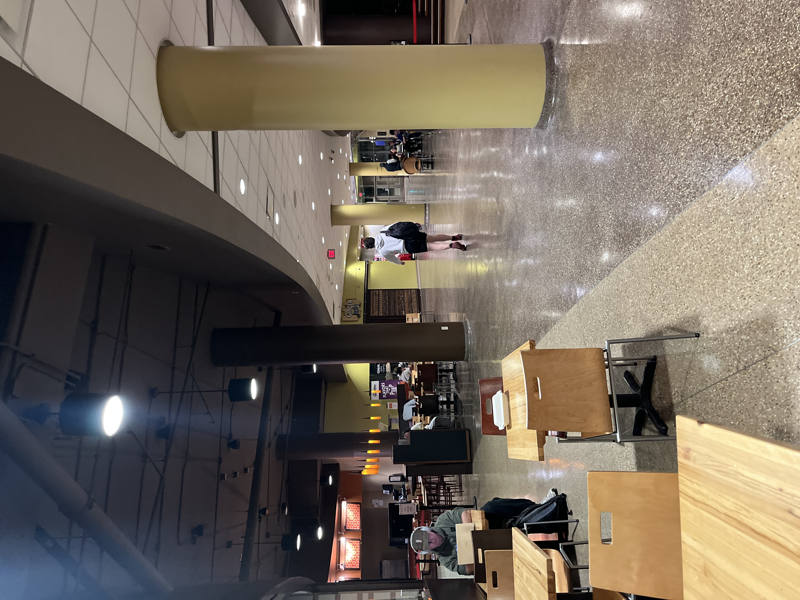

Similar to Memorial Union, Union South is a bustling hub of student activity, and on game days is the center of the action. Located right next to the Camp Randall Arch, next to the Engineering buildings, and the new Morgridge Hall, it is certainly a convenient place to get food, study, or hangout at.
Union South is unique and serves many students further south and west. Union South offers many unique dining options and many cultural foods. Some of the restaurants include:
You can check out more Union Dining options at the Union Dining Page.

Union South has a variety of study spaces for whatever vibe you're looking for. The Sett is a social area with typically a large TV screen on playing sporting games and can be quite loud. Prarie Fire, Union South's cafe, is a quiter and more chill vibe and has an elevated study space that even has a piano which people will often come over and play, offering relaxing study background music.
In conclusion, Union South is another great environment that has many places to study and can offer unique and different conditions to study in. Depending on where your classes are and where you live on campus, this can be the perfect and easily accessible place to study.